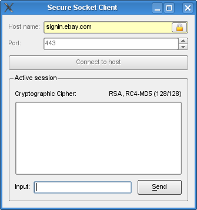
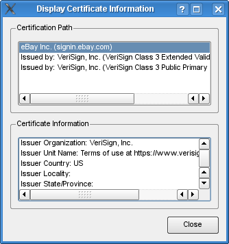

Secure Socket Client Example
Demonstrates how to communicate over an encrypted (SSL) connection
This example uses QSslSocket to demonstrate how to communicate over an encrypted connection, deal with authenticity problems, and display security and certificate information.


Files:
- securesocketclient/certificateinfo.cpp
- securesocketclient/certificateinfo.h
- securesocketclient/certificateinfo.ui
- securesocketclient/sslclient.cpp
- securesocketclient/sslclient.h
- securesocketclient/sslclient.ui
- securesocketclient/sslerrors.ui
- securesocketclient/main.cpp
- securesocketclient/securesocketclient.pro
- securesocketclient/securesocketclient.qrc